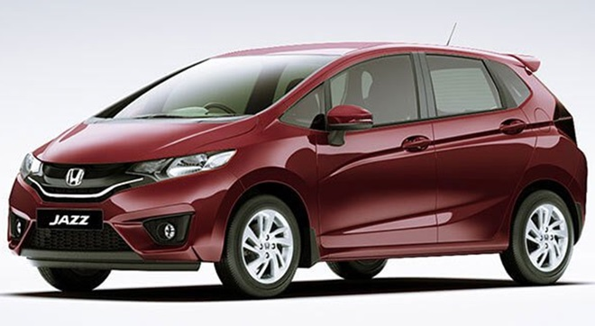
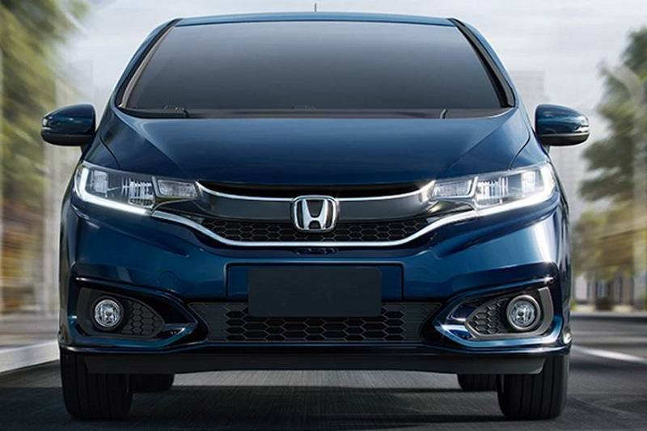

Honda Jazz
Innovative technologies, progressive design, and exciting versatile equipment options: The Audi A6 Sedan combines these values into an exceptionally sporty and elegant symbiosis. Elegant and progressive at the same time, this versatility and comfort open up a new kind of mobility.
REVIEW
Touted as the biggest product comeback of 2015, the new generation Honda Jazz will hope to erase all memories of it's predecessor. Well, may be not all, since the last car was responsible for creating a benchmark for what a premium hatch should be. Spacious, practical and efficient. But since it was largely seen as overpriced, it failed to be a hit for Honda. But a lot has changed since then. Honda has understood the market much better now, and has had experience of playing hardball in the mass segments. And the buyer too now is willing to pay more for more - and a hatchback is no longer seen as a car that can't be really premium. Just take a look at the Hyundai i20's pricing now for instance. The new i20 starts at Rs 5.30 lakh for the base petrol, and tops off at Rs 8.05 lakh for the top-end diesel variant (ex-showroom, Delhi). And the fact that the car is a runaway hit now gives Honda plenty of room to play with.
Styling
If understated is a style, the Honda Jazz has it in spades. The handsome sedan has aged, but has mostly avoided looking dated.The exterior hasn’t changed for a few years now, only adding LED headlights and lashings of chrome in a slow, steady march to today’s appearance. It’s handsome and subtle; the most expressive element perhaps is the corporate trapezoidal grille.Inside, the cockpit is busy, but precise. It’s smartly trimmed in a wide number of materials, but subtle hues keep the interior from looking too busy.Compared to the newer Audi A4, the older A6 shows its age. When the A6 is taken alone, it’s perfectly fine.
A low, slim dash hides a pop-up screen and we actually prefer it to the newer Audis fitted with a fixed screen. The permanent fixture in newer models has a bolted-on look that we just can’t get behind.
Performance
The 1.3 petrol may be quicker on paper than the 1.4 that it replaced, but it’s still slow compared with rivals. It comes alive at the top of its rev range but is in no great hurry to get there. Acceleration suffers as a result, unless you change down a gear – something you’ll often be forced to do.
If you do want a bit more verve, the 1.5-litre engine’s extra 30bhp looks rather tempting. It’s worth remembering that this is still an old-school naturally aspirated engine, though. That means you’ll need to wring its neck for the engine to feel brisk; it doesn’t really come alive until over 3000rpm. For some, chasing the redline will be jolly good fun. If, however, you just want easily accessed thrust we’d look at a TSI-engined Seat Ibiza or Volkswagen Polo instead.
If possible, you should avoid the CVT automatic gearbox. It allows the Jazz’s engine to rev too high, exposing its poor refinement. It also makes the car feel slower when accelerating.

Comfort & Quality
A wonderfully practical small car with a lot of interior space. The quality of the upholstery and interior trim is quite poor. The ride is hard and lumpy even allowing that it is a small car. Performance is quite adequate but the fuel consumption is erratic, sometimes very good but at other times the car is quite thirsty given it's small size and modest performance - and no it isn't the way it is driven, I always drive with one eye on the fuel consumption. Main dealer service costs for such a small car, are horrendous and twice we have had large bills because of the rear brake callipers being seized. When I questioned the main dealer as to whether or not this was a design fault or poor quality materials he didn't know and just shrugged it off as 'One of those things'. Our previous car - a Honda Accord Aerodeck - never experienced any such problems in ten years of ownership. I am not sure that I would buy another Jazz mainly because of the high service costs, it is not much good saving a bit of money on the road tax, insurance and fuel if it is eaten up by expensive parts and services.
Features
1.Available with only diesel MT
2. Dual front airbags
3.ABS with EBD
4.LED tail-lamps
5. Audio system with four speakers and a 3.5-inch screen
6. Steering-mounted audio controls
7.Driver's seat height-adjust
8.A front-centre armrest
9.Speed-sensing door locks
10.Rear parking sensors
11.15-inch wheels
12.Rear defogger
13.Electrically adjustable wing mirrors
14.Driver and co-driver vanity mirror
